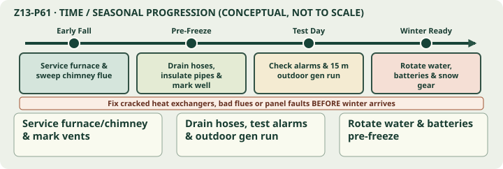

Z13-P61 · Home survival and utilities · New manuscript
Complete an autumn pre-winter residential utility readiness checklist
Catch worn furnace vents, dead alarm batteries, seized shutoffs, and unserviced generators in mild October weather instead of a January blizzard.
When it applies · Upper Midwest and winter-climate homes each autumn before hard freezes arrive.
Equipment · Annual maintenance checklist, chimney/HVAC service contacts, fresh alarm batteries, and cold-weather supplies.

Actions
- Schedule qualified HVAC furnace servicing and certified wood-stove/chimney sweeping in early autumn, change furnace air filters, and clear brush/leaves away from exterior PVC intake/exhaust vents and snow-plow markers around wellheads.[U03, U18, U12, U06]
- Disconnect and drain all exterior garden hoses, insulate vulnerable crawlspace/garage water lines, test all smoke and CO alarms (replacing expired units), and test-run any outdoor portable generator safely for 15–20 minutes outdoors under light load with fresh stabilized fuel.[U10, U12, C06]
- Refresh stored emergency water (6-month rotation), restock LED flashlight/radio batteries, verify snow shovels and salt/sand are accessible, and confirm printed utility/emergency numbers are current.[W14, U14, U16]
Failure recognition · Discovering during a minus 20°F blizzard blackout that the portable generator carburetor is gummed solid from two-year-old stale gasoline.[U10, T12]
Verify · Confirm heating serviced, hoses drained, alarms tested, generator test-run outdoors, and water/batteries refreshed before first hard freeze.[U10, U12, W14]
Stop or change course · Cracked heat exchangers, damaged chimney liners, leaking fuel lines, or electrical panel faults found in autumn must be repaired by licensed trades before winter use.[U03, U18, U02]
Evidence and editorial notes
- C06 · CPSC · CPSC Warns of Generator, Carbon Monoxide and Fire Hazards Ahead of Hurricane Season (2026 seasonal agency guidance)
- Section: Prevent CO poisoning > Portable generators · Conditions: Portable fuel-driven generator during an outage
Support: Use outdoors at least 20 feet from the home with exhaust directed away from buildings.
Limitations: Wind eddies, overhanging eaves, and open windows can still draw exhaust toward occupied structures. · Conflicting evidence: None; 20 ft is a minimum floor, not a guarantee in enclosed alleys.
Editorial note: Anchored numeric separation rule for portable generators only. · Specialist reviewer: Electrical and carbon monoxide safety
Primary source · checked 2026-11-24 - T12 · FEMA / Ready.gov · Build a Kit (current web edition)
- Section: Build a Kit > Basic Disaster Supplies Kit and Maintenance · Conditions: Overnight and multi-day emergency readiness
Support: Assemble water, food, light, NOAA/battery radio, first aid, whistle, local maps, sanitation, medications, and backup power; inspect expiration dates and batteries regularly.
Limitations: Standard 72-hour kits do not cover extended multi-day isolation without replenishment or specialized cold/medical items. · Conflicting evidence: None; links kit readiness to periodic maintenance checks.
Editorial note: Supports equipment readiness, inspection, and overnight-emergency cards. · Specialist reviewer: Emergency management and field readiness
Primary source · checked 2026-11-24 - U02 · CPSC · CPSC Warns of Generator, Carbon Monoxide and Fire Hazards Ahead of Hurricane Season (2026 seasonal agency guidance)
- Section: Use portable generators outdoors; keep exhaust away · Conditions: Portable generator during household outage
Support: Run outdoors at least 20 feet from buildings and direct exhaust away. Use approved connections as the manual dictates; licensed electrical work governs transfer to a building. Never backfeed.
Limitations: Distance alone does not guarantee safety. Local code and exact equipment determine installation. · Conflicting evidence: See A02 claim audit for boundaries.
Editorial note: Core electrical isolation boundary across Z13 generator cards. · Specialist reviewer: Licensed electrician and fire safety
Primary source · checked 2026-11-24 - U03 · NFPA · Heating Fire Safety (current web edition)
- Section: Heating Equipment Safety > Space Heaters, Fireplaces, and Clearances · Conditions: Residential winter heating and supplemental backup heating
Support: Maintain at least a 3-foot clearance between anything flammable and any heating source (space heaters, fireplaces, wood stoves), inspect chimneys annually, use only the fuel specified by the heater manufacturer, and never use kitchen ovens to heat homes.
Limitations: Unvented fuel-burning heaters also create severe carbon monoxide and indoor air hazards; local building codes govern installations. · Conflicting evidence: None; aligns with CPSC-C and READY-HOME-F.
Editorial note: Grounds safe supplemental heating clearances and stop boundaries in Z13. · Specialist reviewer: Fire safety and licensed HVAC trades
Primary source · checked 2026-11-24 - U06 · Minnesota Dept. of Health · Wells and Borings Safety (current web edition)
- Section: Wells and Borings > Minnesota Private Well Standards and Disinfection · Conditions: Minnesota and Upper Midwest private residential wells
Support: Use a licensed Minnesota well contractor for wellhead repair, electrical pump work, or shock disinfection after flooding or backflow; maintain sanitary well caps and isolate well casings from surface snowmelt and agricultural runoff.
Limitations: DIY well-cap removal or improper chlorine mixing risks aquifer contamination and electrical shock. · Conflicting evidence: None; regionalizes EPA-WELL for Minnesota conditions.
Editorial note: Anchors Upper Midwest private-well resilience and licensed-trade handoff. · Specialist reviewer: Minnesota environmental health and licensed well trades
Primary source · checked 2026-11-24 - U10 · FEMA / Ready.gov · Winter Weather (current web edition)
- Section: Winter Household Resilience > Frozen Pipes, Ice Dams, and Heating Loss · Conditions: Sub-zero Upper Midwest winter outages and prolonged cold snaps
Support: Prevent burst pipes by insulating exposed lines, keeping cabinet doors open, shutting off and draining water lines per plumbing guidance if indoor temperatures drop toward freezing, and consolidating household occupants into one safe insulated interior room.
Limitations: Draining hydronic boilers or gas water heaters requires exact manufacturer/plumber steps to prevent equipment damage or gas leaks. · Conflicting evidence: None; regionalizes winter home defense for Minnesota conditions.
Editorial note: Anchors winter pipe protection, thermal-zone consolidation, and abandonment thresholds. · Specialist reviewer: Residential plumbing, HVAC, and cold-weather emergency management
Primary source · checked 2026-11-24 - U12 · CPSC · CO Alarms (current web edition)
- Section: Home Alarms > Smoke, Carbon Monoxide, and Battery Backup Readiness · Conditions: Occupied residences with fuel-burning furnaces, water heaters, attached garages, or outage generators
Support: Maintain interconnected or battery-backed CO and smoke alarms on every floor and outside sleeping rooms, replace expired sensors on schedule, and keep exterior furnace/dryer/exhaust vents clear of drifting snow.
Limitations: Blocked high-efficiency PVC furnace intake/exhaust pipes in heavy snow can force CO back indoors or lock out heating systems. · Conflicting evidence: None; integrates with C09 and Z13-R03.
Editorial note: Connects winter snow-drift vent inspection to household CO prevention. · Specialist reviewer: Carbon monoxide safety and residential HVAC
Primary source · checked 2026-11-24 - U14 · FEMA / Ready.gov · Make a Plan (current web edition)
- Section: Household Emergency Planning, Utility Maps, and Outage Checklists · Conditions: Pre-outage residential documentation and household drills
Support: Document main water, electrical panel, and gas shutoff locations, utility outage phone numbers, medical power registries, and neighborhood check-in networks on paper before storms hit.
Limitations: Utility medical-priority lists do not guarantee uninterrupted power during major ice storms or grid blackouts. · Conflicting evidence: None; bridges Z01 planning with Z13 household infrastructure.
Editorial note: Grounds household utility mapping and vulnerable-occupant contingencies. · Specialist reviewer: Emergency management and accessibility specialist
Primary source · checked 2026-11-24 - U16 · FEMA / Ready.gov · Emergency Alerts (current web edition)
- Section: Household Emergency Communications During Grid and Cell Outages · Conditions: Residential power, internet, and cellular tower disruptions
Support: Maintain a battery/crank NOAA Weather Radio, spare power banks, car-charger backups, written contact cards, and local AM/FM broadcast station lists so warnings and utility restoration updates remain accessible without Wi-Fi or cell data.
Limitations: Cordless landline handsets and VoIP routers fail immediately when house power drops unless separately backed up. · Conflicting evidence: None; links Z13 household comms to Z15 disaster alerts.
Editorial note: Grounds home communications continuity during extended blackouts. · Specialist reviewer: Emergency communications specialist
Primary source · checked 2026-11-24 - U18 · NFPA · Heating Fire Safety (current web edition)
- Section: Wood Stoves, Chimneys, Ash Disposal, and Fuel Storage Safety · Conditions: Residences heated by properly installed wood stoves or fireplaces
Support: Burn seasoned dry wood only, clean creosote-prone chimneys regularly through qualified sweeps, empty cooled ashes strictly into lidded metal containers set outdoors well away from decks and structures, and never burn treated lumber or trash indoors.
Limitations: Embers stay hot enough to ignite cardboard or wood decks days after a fire appears dead. · Conflicting evidence: None; critical winter wood-heat fire prevention boundary.
Editorial note: Covers solid-fuel residential heating maintenance and ash-fire failure modes. · Specialist reviewer: Fire safety and certified chimney/HVAC trades
Primary source · checked 2026-11-24 - W14 · CDC · How to Create an Emergency Water Supply (current web edition)
- Section: How Much Water to Store; Rotation · Conditions: Household emergency water reserve planning
Support: Plan at least 1 gallon per person per day for at least 3 days (more for heat, illness, pregnancy, or pets); rotate self-filled water every 6 months.
Limitations: Backcountry active travel demands vary sharply by exertion, temperature, and humidity. · Conflicting evidence: None; household baseline is cited only as a planning floor, not a physiological maximum.
Editorial note: Distinguishes household storage floors from active field hydration demands. · Specialist reviewer: Household preparedness and drinking-water safety
Primary source · checked 2026-11-24
Source lineage · FEMA Winter Weather and NFPA Heating Safety; new manuscript · Classification · New manuscript.